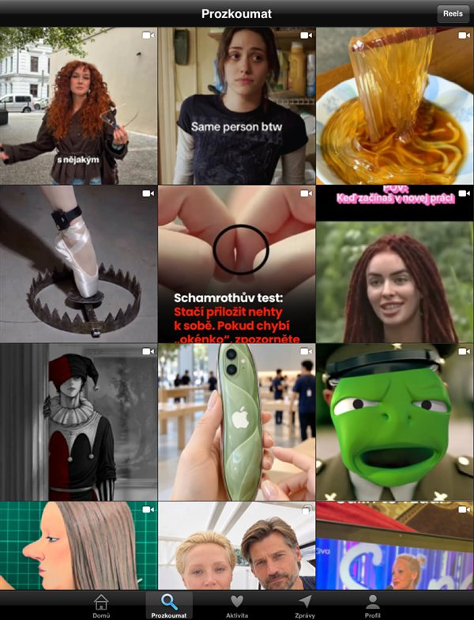
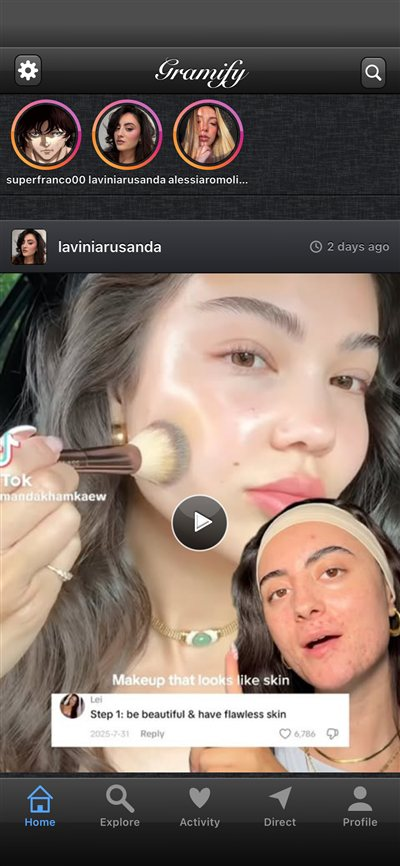
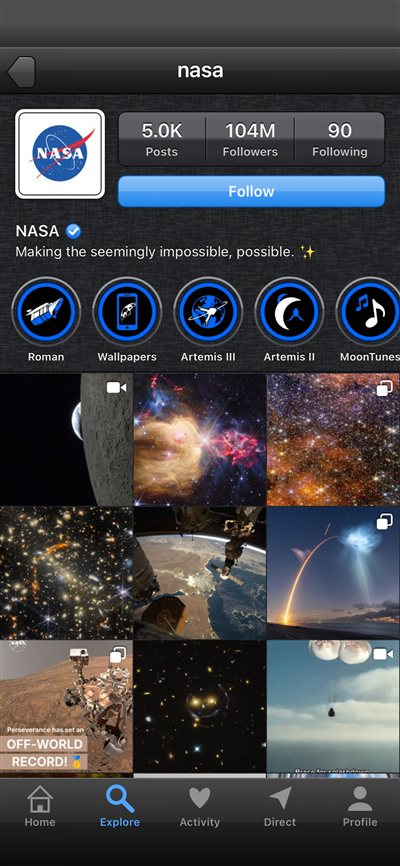

Gramify
Instagram: feed, příběhy, reels, profily a zprávy
Instagram: feed, příběhy, reels, profily a zprávy
Neoficiální klient Instagramu pro iPhone i iPad ve vzhledu iOS 6: tmavé plátno, řádky s rytými čarami, lesklé bubliny chatu a příspěvky jako v tehdejší aplikaci, každá ikonka kreslená, žádné emoji. Přihlásíš se vlastním účtem: aplikace mluví s Instagramem jako jeho aplikace pro Android, přes vlastní moderní TLS vrstvu, přímo ze zařízení - bez pomocného serveru.







Neoficiální aplikace od samcejko, bez vazby na Twitch, Google, Apple, TikTok, Instagram, Metu, Spotify, Kick, NVIDIA, Mojang, Microsoft, OpenRouter, Vine, X, diVine ani projekty Moonlight, Sunshine a Apollo.